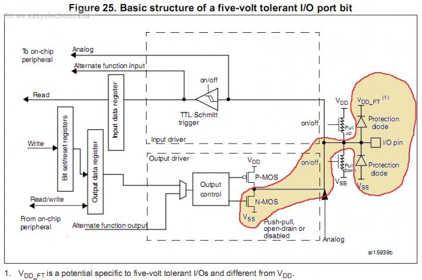
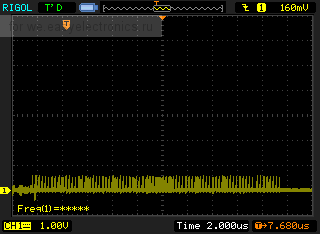
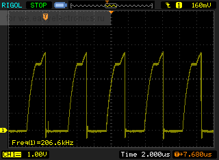

Читая даташит при подготовке схемы я напоролся на интересный момент. Есть выводы которые можно использовать в режиме OpenDrain (т.е. открытый сток). Для тех кто не врубился — СТМ32 питается максимум 3.3В (3.6В вообще-то, но интегральный стабилизатор проще найти на 3.3). Большинство логики работает на 5В (так и у меня — плата с МК отдельно, а основная плата уже есть). Как бы тут сильно экономится кол-во элементов для согласования уровней (будь это специализированная микросхема или транзистор). Я довольный, с расчетом на это поставил резисторы подтяжки к +5В. При заводке выяснилось что OpenDrain не такой уж хороший…
Даташит обещает нереальное счастье, и предлагает вот такую картинку:

В даташите написано что P-MOS транзистор в режиме OpenDrain отключается напрочь. Соответственно навешиваем резистор 10К на +5В и вроде профит… Немного тонкости задачи: у меня кучка входов (реально кучка) которые надо периодически опрашивать, я не стал «городить городки» на матричных считывателях а поставил регистры 74HC165 и периодически их опрашивая имею на входе некую последовательность бит, которую кастанув к структуре можно крутить и вертеть как удобно. Соответственно мне для управления надо 5В для гарантии (при 3.3 В тоже работает, но об этом позже). Пробуем настроить:
#define SW_DAT GPIO_Pin_0
#define SW_CP GPIO_Pin_1
#define SW_CE GPIO_Pin_2
#define SW_PL GPIO_Pin_3
GPIO_InitTypeDef mGPIO_InitStructure;
RCC_AHB1PeriphClockCmd(RCC_AHB1Periph_GPIOC, ENABLE);
memset(&mGPIO_InitStructure, 0, sizeof(mGPIO_InitStructure));
mGPIO_InitStructure.GPIO_Pin = SW_CP|SW_PL|SW_CE;
mGPIO_InitStructure.GPIO_Mode = GPIO_Mode_OUT;
mGPIO_InitStructure.GPIO_OType = GPIO_OType_OD;
mGPIO_InitStructure.GPIO_PuPd = GPIO_PuPd_NOPULL;
mGPIO_InitStructure.GPIO_Speed = GPIO_Speed_50MHz;
GPIO_Init(GPIOC, &mGPIO_InitStructure);
Дальше битбанг в виде цикла с клоками и считываем данные. Отладчик показал что считываем мы постоянно единички. Ясно, что-то не так — лезем осциллом. И ничего не видим. Вернее видим, но явно не то что хотели. Смотрим осциллом по выходам (в частности клок):

Если честно у меня сперва был ступор. Потом я посмотрел крупнее — стало видно затянутый передний фронт — понятно. Скорость нарастания выходного сигнала плохая. Ставим задержки в ПО (надо же выяснить насколько все плохо). Получаем следующую картинку:

Как бы сдвиговые регистры нормально реагируют на клоки длительностью 10-50 нСек, и задержка в виде 2 мкСек на каждый клок, как-то не очень… Крутил настройки по-разному — толку нет. Передний фронт плохой. Кроме того, если посмотреть на вторую осциллограмму — видно в верхней части сигнала горизонтальную ступеньку — это сработал защитный диод на VFT (около 4 Вольт). С этого момента МК начинает греться (несильно, но греется). Попытка уменьшить подтяжку с 10К до 5К каких-либо положительных результатов не принесла. Уменьшать дальше — не вижу смысла — растет потребление тока. В финальной версии буду городить городки на транзисторах или на микросхемах — для согласования уровней. Для входа такой проблемы нет — все нормально работает. Резюмирую — на больших частотах использование OpenDrain не представляется возможным (если кто выяснит обратное — прошу комментить — ибо удобно, но не в таком виде как оно есть сейчас). Толерантность входов к 5 вольтам подтверждается.